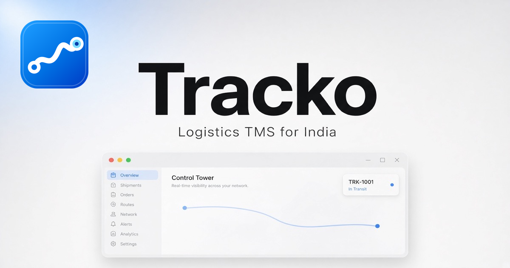
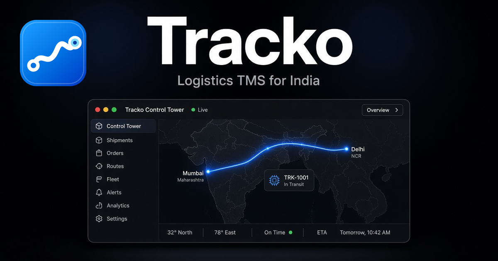
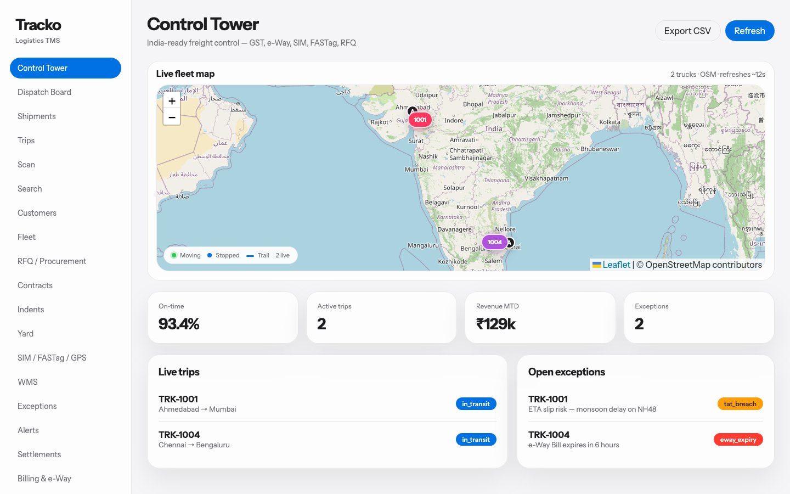
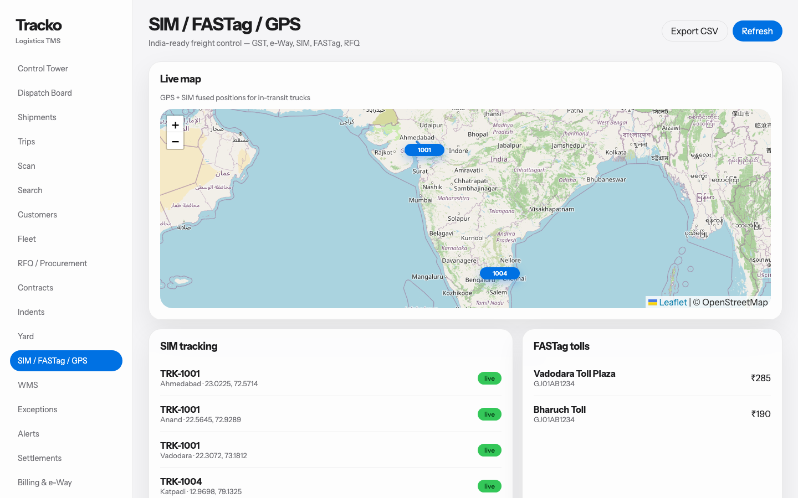
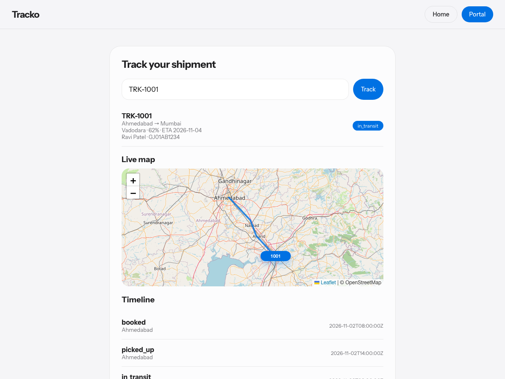
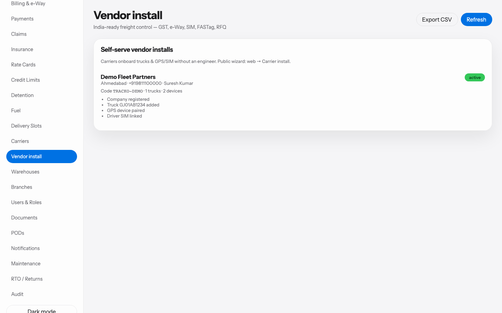
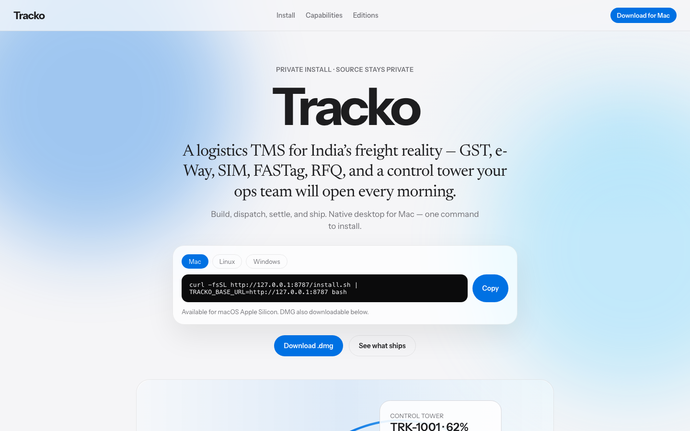
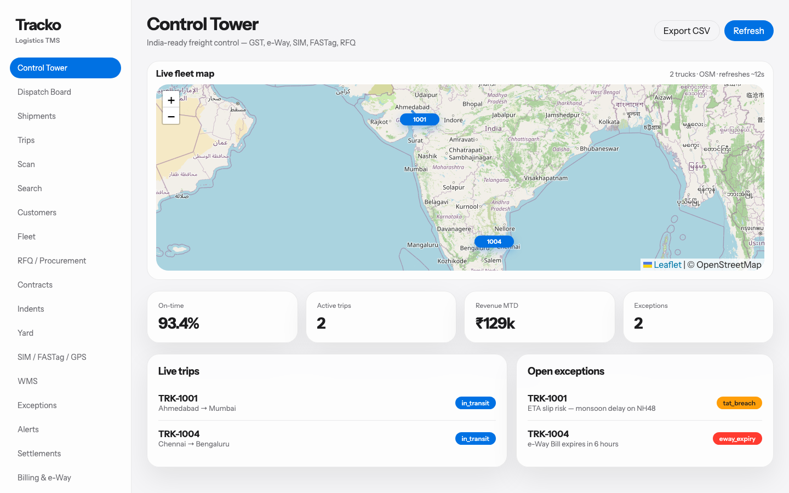

Desktop
Mac
Apple Silicon · notarized DMG
Mac · Windows · Phones
Freight, finally clear.
One control tower for India’s road logistics — GST, e-Way, SIM, FASTag, RFQ. Install in a single line.
Mac DMG · iPhone IPA · Android APK · Windows command when ready


Built private. Shared as an install — never as source.
Grab the binary for your device. Phones are sideload (no App Store / Play). Mac also has a one-line install below.
Desktop
Apple Silicon · notarized DMG
Doorstep
iPhone IPA · Android APK · hub URL + TRACKO-DEMO
Dock
iPhone IPA · Android APK · hub URL + SCAN-DEMO
iOS: register device UDID on team NX667LTDQ2, then install with Xcode Devices or Apple Configurator. Guides: Vendor UAT · Mobile release.
Phone surfaces built for the dock and the door — pair to your private hub after you download above.
Control tower, live map, vendor onboard — the surfaces operators actually use.





Prefer the button? Use Downloads. Or copy the one-liner — Mac script fetches the DMG for you. Windows Setup still pending.
curl -fsSL https://zyvorai.github.io/tracko-install/install.sh | bash
macOS Apple Silicon. Installs to /Applications and launches.
Everything your ops stack juggles — in one record.
Live lanes, exceptions, and settlement in a single ops surface — boardroom-clean, dock-sharp.
GST splits, e-Way Part-B, SIM + FASTag + GPS, Tally export. Built for how freight moves here.
SSE fleet positions, alerts, and dispatch — the map moves while you watch.
Realtime
Fleet positions stream over SSE. Alerts and dispatch update without a refresh. Demo hubs tick GPS every ~2 seconds so you can feel it immediately.

India pack
e-Way lifecycle, GST helpers, FASTag recon, ULIP-shaped Vahan/SARATHI gates — demo today, credentialed when your hub has keys.
Same product. Different doors in.
Mac + Windows
Full control tower. One-command install on either OS.
Recommended
Desktop + portal + phone Scanner / Driver against your private API hub.
Your LAN / VPS
Postgres SoT, JWT, Muse install. Source stays closed.
What you need. What you get.
/api/v1/eventsYour hub. Your data. Public page only ships installers.
Fifteen minutes. Tell us what broke.
http://127.0.0.1:8080 or LAN IPYes. Install and try the desktop against your hub. Commercial terms come later.
Use the Downloads section: Mac DMG, Driver/Scanner IPA and APK. Mac also has a one-line install command. Windows Setup.exe is not published yet.
install.ps1 looks for downloads/Tracko-TMS-Setup-x64.exe. Mac is the primary public path until that artifact is published.
On the hub you run — JSON snapshot and optional Postgres. The public Pages site does not host your freight data.
Yes. Set Server / Settings (or TRACKO_API_URL before Windows install) to the same API base.
Honest snapshot of what’s live.